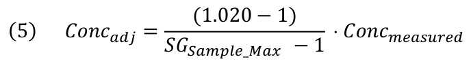

Technical Documents · TD2022MRPL
Edition v1.1, 2022 (version 1.1) · effective 1 January 2022 · superseded
Retrieved on 25 November 2026 from https://www.wada-ama.org/sites/default/files/2022-01/td2022mrpl_v1.1_eng_0.pdf
Editions: v1.1, 2027 (current) · v1.1, 2022 · v1.0, 2022 · v1.0, 2019 · v1.0, 2018 · v1.0, 2017 · v1.0, 2015 · v1.0, 2014 · v1.0, 2013 · v1.0, 2010 · v2.0, 2010 · v1.0, 2009 · v1.0, 2004
p. 1
MINIMUM REQUIRED PERFORMANCE LEVELS AND APPLICABLE MINIMUM REPORTING LEVELS FOR NON-THRESHOLD SUBSTANCES ANALYZED BY CHROMATOGRAPHIC - MASS SPECTROMETRIC ANALYTICAL METHODS
In order to ensure that all Laboratories can detect and report the presence of prohibited Non-Threshold Substances in a uniform way when using chromatographic-mass spectrometric Analytical Methods, a minimum routine detection and identification capability, as well as minimum reporting requirements (applicable to certain classes of or to some specific Non-Threshold Substances) have been established.
1.0 Minimum Required Performance Levels (MRPL)
The MRPL is intended to harmonize, to the extent possible, the analytical performance of chromatographic-mass spectrometric Analytical Methods applied to the detection of Non-Threshold Substances. The MRPL is a mandatory analytical parameter of technical performance established by WADA with which the Laboratories shall comply when testing for the presence of a particular Non-Threshold Substance, its Metabolite(s) or Marker(s).
The MRPL is the minimum concentration of a Non-Threshold Substance or a Metabolite or Marker of a Non-Threshold Substance that Laboratories shall be able to detect (Initial Testing Procedure) and identify (Confirmation Procedure) in routine operations.
- The MRPL is not a Threshold (T) nor is it a Limit of Detection (LOD). Adverse Analytical Findings (AAFs) may result from concentrations below the established MRPL values;
- MRPL values are relevant for the detection and identification of Non-Threshold Substances; they do not apply to Threshold Substances, which are covered in other Technical Documents (TD) (e.g., TD DL[1], TD GH [2], TD CG/LH[3]);
- The MRPL is established for relevant target Analyte(s) of Non-Threshold Substances [i.e., the Non-Threshold Substance itself and/or its relevant Metabolite(s), Marker(s) or degradation product(s)] depending on the extent of their metabolism, pharmacokinetics, pharmacodynamics and/or stability in the Sample matrix (e.g., urine);
- Since the metabolic and excretion patterns of Non-Threshold Substances may vary substantially with time after administration, Laboratories shall include in their Analytical Testing Procedures relevant target Analyte(s) to ensure the detection of the Non-Threshold Substance as extensively as possible.
p. 2
2.0 Minimum Reporting Levels (MRL) (for Certain Classes of or for Some Specific Non-Threshold Substances)
The MRPL and the MRL (when applicable) constitute related, but different requirements:
- The MRPL constitutes a minimum technical performance requirement for the analysis of Non-Threshold Substances and an AAF may be reported at levels below the MRPL;
- In contrast, the MRL is a reporting requirement, which defines a cut-off level below which Laboratories should not report an AAF for certain classes of or for some specific Non-Threshold Substances (see Table 1);
- The MRL is established to ensure harmonization of reporting by Laboratories, and it may be equal to or higher (≥), but not lower (<), than the MRPL.
(1) MMMMMM ≥MRPL
3.0 Limit of Detection (LOD) of the Initial Testing Procedure (ITP)
The Laboratory's method validation of the ITP shall include the estimation of the LOD for target Analyte(s) of each Non-Threshold Substance (i.e., the parent compound and/or its relevant Metabolite(s), Marker(s) or degradation products) using the corresponding Reference Material, when available.
- It is not necessary to estimate the LOD for all potential Metabolites, Marker(s) or degradation products of a given Non-Threshold Substance;
- The estimated LOD of the ITP shall be less than or equal to (≤):
- 50% of the corresponding MRPL
(2) LOD ≤ 0.5 ⋅ MRPL
[Comment: This is not applicable to the analysis of beta-blockers, for which the LOD ≤ MRL, irrespective of whether the MRL is applicable or not - see Comment in Table 1)].
- the corresponding Minimum Reporting Level (MRL), when applicable (see Table 1).
(3) LOD ≤ MMMMMM
[Comment: This is not applicable in the following cases, for which the LOD of the ITP shall meet condition (2) (≤ 0.5⋅MRPL):
- Those substances for which an MRL has been established to determine the concentration above which the finding shall be reported as an AAF without the need to conduct GC/C/IRMS analysis (i.e., 19-NA, 19-NE, boldenone, boldenone Metabolite, and formestane)[4, 5];
- Those substances classified under class S1.2 that may be used as growth promoters for livestock (i.e., clenbuterol, ractopamine, zeranol and zilpaterol[6]);
- Cocaine (parent compound).]
OR
p. 3
- In the absence of a suitable Reference Material for a specific Non-Threshold Substance or its relevant Metabolite(s), Marker(s) or degradation products, the LOD will be assumed to be similar to that of a related Prohibited Substance of the same class.
[Comment: When using chromatographic-mass spectrometric Analytical Methods, the LOD is expressed as the minimum concentration of the Analyte that can be routinely detected (but not necessarily identified or quantified) in representative samples at a 95% detection rate.]
4.0 Limit of Identification (LOI) of the Confirmation Procedure (CP)
The Laboratory shall document that the CP for a Non-Threshold Substance allows the identification of the relevant target Analyte(s) (i.e., the Non-Threshold Substance and/or its relevant Metabolite(s), Marker(s) or degradation products) in compliance with the TD IDCR[7].
- The Laboratory shall estimate, during method validation, the Limit of Identification (LOI) of the CP, at maximum 5% false negative identification rate, for a target Analyte for which a Reference Material is available;
- The LOI shall be less than (<) the corresponding MRPL.
(4) LOI < MRPL
[Comment: The LOI for cocaine (parent compound) shall be less than or equal to (≤) 1 ng/mL. The Laboratory shall confirm the presence of cocaine in a Sample when:
- Cocaine is present at a concentration higher than (>) 10 ng/mL, and/or
- Benzoylecgonine is present at a concentration higher than (>) 50 ng/mL.]
5.0 Reporting of Findings for Non-Threshold Substances
- A confirmed identification at any concentration of a Non-Threshold Substance or its relevant Metabolite(s), Marker(s) or degradation products shall be reported as an AAF, with the exception of those substances subject to an MRL as indicated in Table 1;
- A finding for a Non-Threshold Substance not subject to MRL shall be reported as an AAF if the presence of the target Analyte(s) of the Non-Threshold Substance in the Sample ("A" or "B") is confirmed in compliance with the TD IDCR[7]. No quantification or estimation of concentrations of the target Analyte(s) is necessary.
[Comment: It is recognized that some Laboratories will be able to identify and report these Non-Threshold Substances in lower concentrations than other Laboratories. While such individual capabilities are encouraged in order to improve the overall system, it is also recognized that there are minimum routine detection capabilities (defined by the applicable MRPLs) at which all Laboratories shall operate.]
p. 4
- Findings for Non-Threshold Substances subject to an MRL shall be reported as an AAF if the relevant target Analyte(s) is(are) confirmed in the "A" Sample at an estimated concentration (adjusted for specific gravity (SG), if needed) which is higher than (>) the corresponding MRL. Such findings should not be reported as an AAF if the estimated concentration (adjusted for specific gravity (SG), if needed) is less than or equal to (≤) the corresponding MRL;
- For urine "A" Samples with SGSample > 1.018, estimated concentrations of target Analyte(s) of Non-Threshold Substances with an MRL shall be adjusted to SG = 1.020 as follows:

Refer to the effective TD DL[1] for instructions on calculating SGSample_Max
- The "A" Confirmation Procedure estimation of the concentration(s) of target Analyte(s) of Non-Threshold Substances with an MRL¹ shall be based, at minimum, on the use of the following:
- An adequate internal standard;
- A single-point calibrator prepared in the matrix of analysis (e.g., urine) at 120% of the MRL; and
- An independent² quality control (QC) sample at the MRL, prepared in the same matrix of analysis as the single-point calibrator.
[Comment: For those Samples where the concentration estimated during the ITP is well higher than the MRL (≥ 2 x MRL), the Laboratory, at its discretion, may also use an additional calibrator with a concentration closer to the level estimated in the Sample.]
Only when the analytical signal (relative to that of the internal standard) for the Sample exceeds that of the 120% MRL single-point calibrator, and the signal (relative to that of the internal standard) for the single-point calibrator exceeds that of the QC, the Laboratory can confidently conclude that the concentration of the Analyte in the Sample exceeds the MRL, and the finding for the Non-Threshold Substance shall be reported as an AAF.
- The "B" Sample result for a Non-Threshold Substance subject to an MRL shall only confirm the presence of the target Analyte(s) of the Non-Threshold Substance (in compliance with the TD IDCR[7]) for the AAF to be valid. No quantification or estimation of concentrations of such target Analyte(s) is necessary.
¹For the confirmation of 19-NA findings, refer to the TD NA[5].
²The QC shall be prepared from a different batch or different stock solution of Reference Material than the single-point calibrator.
p. 5
Table 1. MRPLs for Detection and MRLs for Reporting of Non-Threshold Substances
| Prohibited Class | Substance (Specific Examples/Exemptions) | MRPL (a, b) (ng/mL) | MRL(c) (ng/mL) | Comments |
|---|---|---|---|---|
| S1.1 Anabolic Androgenic Steroids (AAS) | 2.5 | N/A | Refer to TD EAAS[8] , TD IRMS[4] , TL-08[9] , TL-10 [10] and TL-20[11] . | |
| S1.1 Anabolic Androgenic Steroids (AAS) | 4α-chloro-18-nor-17β-hydroxymethyl- 17α-methyl-5α-androst-13-en-3α-ol (Long-term Metabolite (LTM) of dehydrochlormethyltestosterone (DHCMT) and other related precursor steroids) | 0.4 | N/A | |
| S1.1 Anabolic Androgenic Steroids (AAS) | 6α-hydroxy-androstenedione | 10 | 10 | Refer to the TD IRMS[4] . |
| S1.1 Anabolic Androgenic Steroids (AAS) | 17β-hydroxymethyl-17α-methyl-18-nor- androst-1,4,13-trien-3-one (LTM of metandienone) | 1 | N/A | |
| S1.1 Anabolic Androgenic Steroids (AAS) | 19-norandrosterone (19-NA), 19-noretiocholanolone (19-NE) | 2 | 15 (d) | Refer to the TD NA[5] . |
| S1.1 Anabolic Androgenic Steroids (AAS) | Boldenone / Boldenone Metabolite | 2.5 | 30 (d) | Refer to the TD IRMS[4] . |
| S1.1 Anabolic Androgenic Steroids (AAS) | Stanozolol Metabolites | 1 | N/A | |
| S1.2 Other Anabolic Agents | 1 | N/A | · For andarine, refer to TL-07[12] . · For enobosarm (ostarine), refer to TL-12[13] . | |
| S1.2 Other Anabolic Agents | Clenbuterol | 0.2 | 5 | · Refer to TL-23[6] . · For zeranol, refer also to TL-04[14] . |
| S1.2 Other Anabolic Agents | Ractopamine, zeranol, zilpaterol | 1 | 5 | |
| S2.1.2 HIF Activating Agents Daprodustat (GSK1278863), IOX2, molidustat (BAY 85-3934), roxadustat (FG-4592), vadadustat (AKB-6548) | 2 | N/A | ||
| S2.2.1 Gonadotrophin (CG/LH) Releasing Factors (Buserelin, deslorelin, gonadorelin, goserelin, leuprorelin, narfarelin, triptorelin) | 2 | N/A | ||
| S2.2.3 Growth Hormone (GH), its Analogues and Fragments | GH Fragments (AOD9604, hGH 176-191) | 2 | N/A | |
| S2.2.4 Growth Hormone Releasing Factors | GH-Releasing Hormone (GHRH) and its Analogues (CJC-1293, CJC-1295, CJC-1295 DAC, sermorelin, tesamorelin) | 1 Urine 0.3 Plasma/Serum | N/A | |
| S2.2.4 Growth Hormone Releasing Factors | GH Secretagogues (GHS) and its Mimetics (Anamorelin, ibutamoren, ipamorelin, macimorelin,tabimorelin) | 2 | N/A | |
| S2.2.4 Growth Hormone Releasing Factors | GH-Releasing Peptides (GHRPs) (Alexamorelin, GHRP-1, -2, -3, -4, -5 and -6; examorelin) | 1 | N/A | |
| S2.3 Growth Factors and Growth Factor Modulators | IGF-I analogues | 0.3 Urine 2 Plasma/Serum | N/A | |
| S2.3 Growth Factors and Growth Factor Modulators | TB-500 (N-Ac LKKTETQ) | 2 | N/A | |
| S3. Beta-2 Agonists | 20 | N/A | · For salbutamol and formoterol, which are Threshold Substances, refer to TD DL[1] . · For tulobuterol, refer to TL-17[15] . | |
| S3. Beta-2 Agonists | Higenamine, salmeterol, vilanterol | 10 | 10 | The MRLs for higenamine, salmeterol and vilanterol are applied to the determination of the free (non-conjugated) parent compounds. |
| S3. Beta-2 Agonists | Tretoquinol | 20 | 20 | Refer to TL-16[16] . |
| S4.1 Aromatase Inhibitors | 20 | N/A | · For 6-oxo, refer to TL-21[17] . · For testolactone, refer to TL-18[18] . · For other aromatase inhibitors, refer to TL-20[11] . | |
| S4.1 Aromatase Inhibitors | Formestane | 50 | 150(d) | Refer to the TD IRMS[4] . |
| S4.2 Anti-estrogenic Substances and SERMS | 20 | N/A | ||
| S4.4 Metabolic Modulators | 10 | N/A | For trimetazidine, refer to TL-13[19] . | |
| S4.4 Metabolic Modulators | GW1516 and GW0742 Metabolites (sulfoxide, sulfone) | 2 | N/A | |
| S4.4 Metabolic Modulators | Insulins | 0.05 Urine 0.3 Plasma/Serum | N/A | |
| S4.4 Metabolic Modulators | Meldonium | 100 | 100 | |
| S5. Diuretics and Masking Agents | Diuretics | 200 | N/A | For chlorazanil, refer to TL-06[20] . |
| S5. Diuretics and Masking Agents | Acetazolamide, bumetanide, furosemide, hydrochlorothiazide, torasemide, triamterene | 20 | 20 | · For these six (6) diuretics, refer to TL-24[21] . · For all other diuretics not specifically listed here, confirmed findings at any concentration (in compliance with the identification criteria established in the TD IDCR[7] ) shall be reported as an AAF. |
| S5. Diuretics and Masking Agents | Masking Agents | 200 | N/A | |
| S5. Diuretics and Masking Agents | Desmopressin and analogs | 2 | N/A | |
| S5. Diuretics and Masking Agents | Dextran, Mannitol | 5 000 000 (5 mg/mL) | 5 000 000 (5 mg/mL) | The MRL for dextran and mannitol is applied to the free (non- conjugated) parent compound. |
| S5. Diuretics and Masking Agents | HES | 200 000 (200 µg/mL) | N/A | |
| S5. Diuretics and Masking Agents | Probenecid | 200 | 200 | The MRL for probenecid is applied to the free (non-conjugated) parent compound. |
| M1.2 Artificially Enhancing the Uptake, Transport or Delivery of Oxygen | Efaproxiral (RSR13) | 10 | N/A | |
| S6. Stimulants | 50 | 50 | · For cathine, ephedrine, methylephedrine and pseudoephedrine, which are Threshold Substances, refer to TD DL[1] . · For phentermine and mephentermine, refer to TL-09[22] . · For meclofenoxate, refer to TL-01[23] . · For para-hydroxy-amphetamine, refer to TL-02[24] . · For oxilofrine (methylsynephrine), refer to TL-05[25] . | |
| S6. Stimulants | Cocaine (parent compound) | 10 | 10 | The Laboratory shall report the estimated concentration of the relevant target Analyte(s) (i.e., cocaine and/or benzoylecgonine), which led to the AAF (i.e., present in a Sample at levels higher than (>) the corresponding MRL). In addition, for Results Management purposes, where benzoylecgonine is present in a Sample at levels higher than (>) its MRL of 50 ng/mL (and reported as an AAF), but cocaine is absent or present at levels lower than or equal to (≤) 10 ng/mL, the Laboratory shall also confirm the presence (or absence) of cocaine in the Sample and provide the estimated concentration of cocaine (if between 1-10 ng/mL) in the Test Report. |
| S6. Stimulants | Benzoylecgonine (major Metabolite of cocaine) | 50 | 50 | The Laboratory shall report the estimated concentration of the relevant target Analyte(s) (i.e., cocaine and/or benzoylecgonine), which led to the AAF (i.e., present in a Sample at levels higher than (>) the corresponding MRL). In addition, for Results Management purposes, where benzoylecgonine is present in a Sample at levels higher than (>) its MRL of 50 ng/mL (and reported as an AAF), but cocaine is absent or present at levels lower than or equal to (≤) 10 ng/mL, the Laboratory shall also confirm the presence (or absence) of cocaine in the Sample and provide the estimated concentration of cocaine (if between 1-10 ng/mL) in the Test Report. |
| S6. Stimulants | Octopamine | 1 000 (1 µg/mL) | 1 000 (1 µg/mL) | The MRL for octopamine is applied the total concentration of the parent compound (free form + phase II sulfate Metabolite). |
| S7. Narcotics | 25 | 25 | · For hydromorphone, refer to TL-15[26] . · For morphine, which is a Threshold Substance, refer to TD DL[1] and TL-22[27] . · For oxymorphone, refer to TL-11[28] . | |
| S7. Narcotics | Buprenorphine | 2.5 | 2.5 | |
| S7. Narcotics | Fentanyl (and derivatives) | 1 | 1 | |
| S8. Cannabinoids | For 11-nor-∆9- tetrahydrocannabinol-9-carboxylic acid (carboxy-THC), which is a Threshold Substance, refer to TD DL[1]. | |||
| S8. Cannabinoids | Cannabimimetics | 1 | 1 | |
| S9. Glucocorticoids (e.g., beclomethasone, ciclesonide, flumethasone, flunisolide, fluocortolone, fluorometholone, methylprednisolone, mometasone, triamcinolone) | 30 | 30 | This MRL is applied to the total concentration of the parent compound (free form + phase II glucuronide). This MRL does not apply to cortisone and hydrocortisone (cortisol), which are produced endogenously. | |
| S9. Glucocorticoids (e.g., beclomethasone, ciclesonide, flumethasone, flunisolide, fluocortolone, fluorometholone, methylprednisolone, mometasone, triamcinolone) | Betamethasone, dexamethasone | 60 | 60 | The MRL for betamethasone and dexamethasone is applied to the total concentration of the parent compound (free form + phase II glucuronide). |
| S9. Glucocorticoids (e.g., beclomethasone, ciclesonide, flumethasone, flunisolide, fluocortolone, fluorometholone, methylprednisolone, mometasone, triamcinolone) | Desacetyldeflazacort (Metabolite of deflazacort), Fluticasone propionate-17β-carboxylic acid (Metabolite of fluticasone propionate) | 30 | 30 | |
| S9. Glucocorticoids (e.g., beclomethasone, ciclesonide, flumethasone, flunisolide, fluocortolone, fluorometholone, methylprednisolone, mometasone, triamcinolone) | 6β-hydroxy-budesonide (Metabolite of budesonide) | 45 | 45 | |
| S9. Glucocorticoids (e.g., beclomethasone, ciclesonide, flumethasone, flunisolide, fluocortolone, fluorometholone, methylprednisolone, mometasone, triamcinolone) | Prednisolone | 100 | 100 | The MRLs for prednisone and prednisolone are applied to the total concentrations of the parent compounds (free form + phase II glucuronide). Confirmed findings for prednisolone |
| S9. Glucocorticoids (e.g., beclomethasone, ciclesonide, flumethasone, flunisolide, fluocortolone, fluorometholone, methylprednisolone, mometasone, triamcinolone) | Prednisone | 300 | 300 | or prednisone at an estimated concentration higher than (>) the respective MRL shall be reported as AAF, unless the Sample shows signs of extensive degradation[8] , in which case the finding shall be reported as an ATF. |
| S9. Glucocorticoids (e.g., beclomethasone, ciclesonide, flumethasone, flunisolide, fluocortolone, fluorometholone, methylprednisolone, mometasone, triamcinolone) | Triamcinolone acetonide | 15 | 15 | The MRL for triamcinolone acetonide is applied to the total concentration of the parent compound (free form + phase II glucuronide). |
| P1. Beta-Blockers | 50 | 50 | The MRL for beta-blockers is only applied in those cases (sports) where the substance is prohibited In-Competition only[29] . For those sports in which beta-blockers are prohibited at all times[29] , these substances, being Non-Threshold Substances, shall be reported at any concentration if their presence is confirmed in a Sample (in compliance with the identification criteria established in the TD IDCR[7] ). |
p. 6
p. 7
p. 8
p. 9
p. 10
p. 11
N/A: MRL not applicable (substance not subject to MRL).
(a) Except otherwise specified in Table 1, the MRPL / MRL are applied to the analysis of urine Samples.
(b) Except otherwise specified in Table 1, the MRPL is applied to relevant target Analyte(s) of Non-Threshold Substances (i.e., the parent compound and/or relevant Metabolite(s) and/or Marker(s) and/or degradation product(s), as applicable), for which there is an available Reference Material (for example, the MRPL for all relevant target Analyte(s) of AAS is 2.5 ng/mL, except for those AAS and/or their Metabolite(s) that are listed in Table 1). The MRPLs are not necessarily applied to all possible target Analyte(s) of a given Prohibited Substance, but only to those that have been determined as relevant to ensure optimal detection of past substance abuse.
(c) Unless otherwise specified in in Table 1, the MRLs for Non-Threshold Substances are applied to either the parent compound or a specific Metabolite, depending on the metabolism and excretion pattern of the substance.
These MRLs shall not be applied to the sum of estimated concentrations of different molecular species [i.e., parent compound and phase-I Metabolite(s), or different phase-I Metabolite(s)].
However, when the Analytical Method used includes also the determination of phase-II Metabolites (e.g., glucuronides, sulfates) of the specific target substance, the MRL is applied to the total concentration (i.e., free and conjugated fractions) of the substance. This estimation is obtained either by separate determination of the molecular species (e.g., by LC-MS analysis) or following the de-conjugation of the phase-II Metabolite(s), which shall be expressed as equivalent concentration of the parent compound.
(d) This MRL corresponds to the concentration above which the finding shall be reported as AAF without the need to conduct GC/C/IRMS analysis.
6.0 References
[1] WADA Technical Document TD DL: Decision Limits for the Confirmatory Quantification of Exogenous Threshold Substances by Chromatography-based Analytical Methods.
[2] WADA Technical Document TD GH: human Growth Hormone (hGH) Isoform Differential Immunoassays for Doping Control Analyses.
[3] WADA Technical Document TD CG/LH: Reporting and Management of Urinary Human Chorionic Gonadotrophin (hCG) and Luteinizing Hormone (LH) Findings in Male Athletes.
[4] WADA Technical Document TD IRMS: Detection of Synthetic Forms of Prohibited Substances by GC/C/IRMS.
[5] WADA Technical Document TD NA: Harmonization of Analysis and Reporting of 19-Norsteroids Related to Nandrolone
[6] WADA Technical Letter-23: Minimum Reporting Level for Certain Substances Known to be Potential Meat Contaminants.
[7] WADA Technical Document TD IDCR: Minimum Criteria for Chromatographic-Mass Spectrometric Confirmation of the Identity of Analytes for Doping Control Purposes.
p. 12
[8] WADA Technical Document TD EAAS: Measurement and Reporting of Endogenous Anabolic Androgenic Steroid (EAAS) Markers of the Urinary Steroid Profile.
[9] WADA Technical Letter-08. Use of Internal Standards.
[10] WADA Technical Letter-10. In situ Formation of Exogenous Compounds in Urine Samples.
[11] WADA Technical Letter-20. In situ Formation of Specific Substances with a Steroid Structure.
[12] WADA Technical Letter-07. Andarine-Flutamide.
[13] WADA Technical Letter-12: Enobosarm (Ostarine).
[14] WADA Technical Letter-04: Analysis and Reporting of Zeranol.
[15] WADA Technical Letter-17: Detection of Tulobuterol in the Presence of Bupropion.
[16] WADA Technical Letter-16: Tetroquinol.
[17] WADA Technical Letter-21: In situ Formation of 4-androstene-3,6,17-trione (6-oxo) and Metabolites.
[18] WADA Technical Letter-18: In situ Formation of Testolactone.
[19] WADA Technical Letter-13: Trimetazidine
[20] WADA Technical Letter-06: Possible Metabolization of Proguanil to Chlorazanil.
[21] WADA Technical Letter-24: Minimum Reporting Level for Certain Diuretics that are Known Contaminants of Pharmaceutical Products.
[22] WADA Technical Letter-09: Oxethazaine.
[23] WADA Technical Letter-01: Meclofenoxate.
[24] WADA Technical Letter-02: Mebeverine Metabolism.
[25] WADA Technical Letter-05: Oxilofrine.
[26] WADA Technical Letter-15: Hydromorphone.
[27] WADA Technical Letter-22: Ethylmorphine.
[28] WADA Technical Letter-11: Oxymorphone
[29] The World Anti-Doping Code International Standard Prohibited List.
[Current versions of WADA Technical Documents and Technical Letters may be found at https://www.wada-ama.org/en/what-we-do/science-medical/laboratories
The current version of WADA's Prohibited List may be found at https://www.wada-ama.org/en/what-we-do/the-prohibited-list ]
Retrieved on 25 November 2026 from https://www.wada-ama.org/sites/default/files/2022-01/td2022mrpl_v1.1_eng_0.pdf